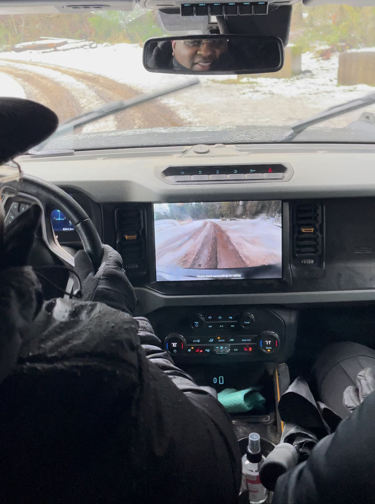
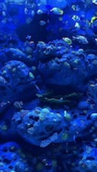
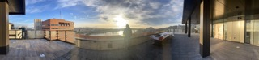

Offroading

Taking the 2021 Bronco offroading in Olypmia, Washington, 1/2022.
This was a private test drive sponsored by Ford Motor Company for 2020 Reservation holders yet to receive
their Bronco. I would not receive my Bronco unitl Jan 2023.
The Covid-19 Pandemic created huge supply constraints for the auto industy which was excererbated
by the trucker protests to mask wearing. I was very fortunate to recieve my Bronco with all the custom
builds I ordered.
I was pushed to 2023 from 2021 model years and was in the last few scheduled builds made fully custom before
Feb 2023 supply constraints prevented other 2020 reservation
holders from recieving the same builds, despite patiently waiting over two years. I am extremely pleased and
really enjoy my Bronco. Considering the circumstances,
I feel like I won a small lottery!
Photography

Photo by LSF. Aquariam, Grand Palace, Branson, Missouri


Photos by LSF.
Top: View from rooftop of The Porter Portland, Curio Collection by Hilton. Bottom:
High-rise view from NW Natural Gas building, Portland, OR.